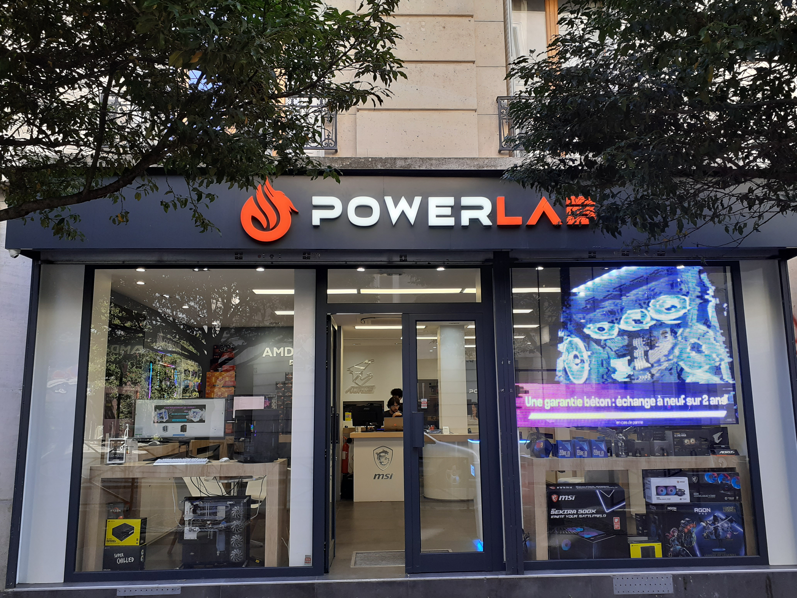
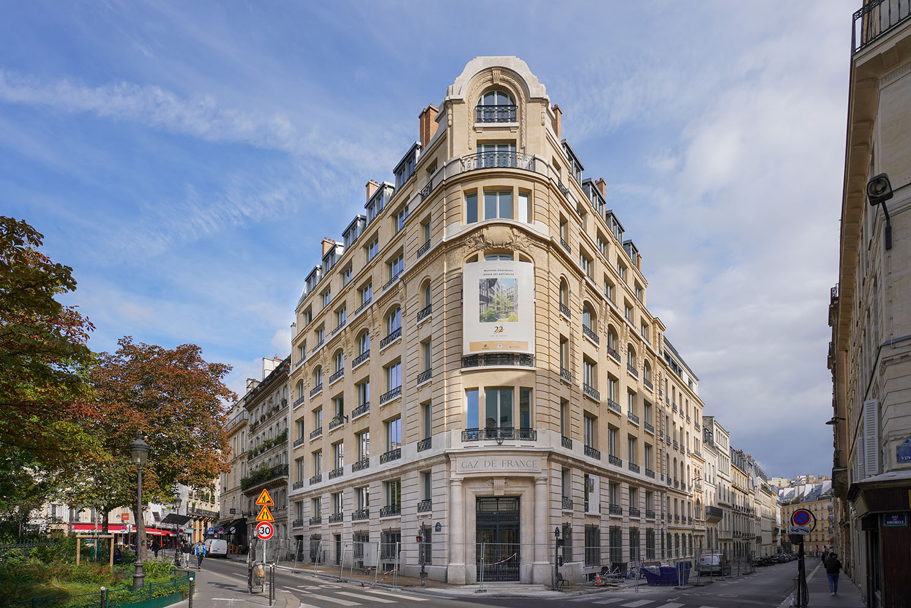
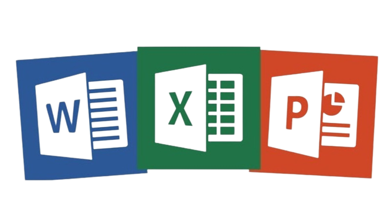
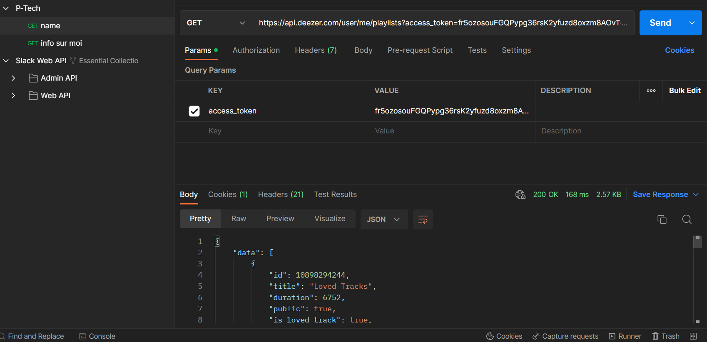

Je suis étudiant en classe de Terminal RISC (Réseau
Informatique et Systèmes Communicants) au Lycée Gustave Ferrié dans le 10ème arrondissement de Paris, je fais parti du programme P-Tech.
Le programme P-tech est un modèle d'éducation mondial qui offre aux étudiants du monde entier la possibilité
de développer des aptitudes et des compétences qui se traduiront directement par l'obtention de clés nécessaires
aux carrières compétitives futures.En savoir plus
Loisirs:
Je suis passionné des jeux vidéo que ce soit GTA5, GTA 4,
GTA San Andreas, GTA Vice city et GTA 3 je joue aussi a just cause 3, hitman absolution, Farcry 4 et 3 et au jeu mobile comme league of leagend lorsque je n'est rien
a faire. Pour dire jouer est ma passion depuis longtemps et sa me permet de me distraire et d'oublier tous les problèmes.
Je fait de la natation depuis l'age de 13 ans jusqu'a maintenant
car j'aime bien nager et je trouve que c'est la meilleur activité a pratiquer.
Loisirs:
Je suis passionné des jeux vidéo que ce soit GTA5, GTA 4,
GTA San Andreas, GTA Vice city et GTA 3 je joue aussi a just cause 3, hitman absolution, Farcry 4 et 3 et au jeu mobile comme league of leagend lorsque je n'est rien
a faire. Pour dire jouer est ma passion depuis longtemps et sa me permet de me distraire et d'oublier tous les problèmes.
Je fait de la natation depuis l'age de 13 ans jusqu'a maintenant
car j'aime bien nager et je trouve que c'est la meilleur activité a pratiquer.
Presentation:
Je suis étudiant en classe de Terminal RISC (Réseau
Informatique et Systèmes Communicants) au Lycée Gustave Ferrié dans le 10ème arrondissement de Paris, je fais parti du programme P-Tech.
Le programme P-tech est un modèle d'éducation mondial qui offre aux étudiants du monde entier la possibilité
de développer des aptitudes et des compétences qui se traduiront directement par l'obtention de clés nécessaires
aux carrières compétitives futures.En savoir plus
Expériences professionnelles:
Stage - BNP Paribas Valmy 4
Mes recherche m'ont permis de trouver un stage au sein de BNP Paribas Valmy 4
situé au 18 Avenue Léon Gaumont dans le 20ème arrondissement de Paris. Lors de mon stage j'ai participé au Réunions (Daily, QAP, V360, Sprint etc ...) et j'ai aussi Créer un site interne en utilisant le language de programmations HTML et le site web TailwindCss.
Ce stage m'a fait découvrir le monde des grandes societé et leurs organisations, j'ai aimé discuté avec plusieurs développeur de la BNP.
Stage - Powerlab

Mes recherche m'ont permis de trouver un stage dans la boutique Powerlab
situé au 34 Rue Montgallet dans le 12ème arrondissement de Paris. Lors de mon stage j'ai appris a overclocker des PCs, monter des PCs avec les composants qui m'ont était fournie
et j'ai effectuer des tests sur des PCs défectueux avec plusieurs applications qui m'ont était dites. Ce stage m'a fait découvrir le monde des boutiques et leurs fonctionnement.
Stage - BNP Paribas
Mes recherche m'ont permis de trouver un stage au sein de BNP Paribas
situé au 59 Rue de la République dans le département du 93100 a Montreuil. Lors de mon stage j'ai appris a build des PCs, préparé le matériel des utilisateurs avec les composants qui m'ont était fournie (sacs, souris, hub, casque et cable de securité.)
et j'ai remis au utilisateurs leurs équipement. Ce stage m'a fait découvrir le monde des grandes societé et leurs fonctionnement.
Stage - Deezer

Mes recherche m'ont permis de trouver un stage au sein de Deezer
situé au 24 Rue de Calais dans le 9ème arrondissement de Paris. Lors de mon stage j'ai appris a gérer des language de programmations comme le Python, le Sql et les API, j'ai fait
un blind test en Python, j'ai utilisé le Sql pour obtenir des informations sur les utiisateurs et pour finir j'ai utilisé des API pour obtenir des informations sur mes informations. Ce stage m'a fait découvrir le monde des entreprises et leurs fonctionnement.
Expériences professionnelles:
Stage - BNP Paribas Valmy 4
Mes recherche m'ont permis de trouver un stage au sein de BNP Paribas Valmy 4
situé au 18 Avenue Léon Gaumont dans le 20ème arrondissement de Paris. Lors de mon stage j'ai participé au Réunions (Daily, QAP, V360, Sprint etc ...) et j'ai aussi Créer un site interne en utilisant le language de programmations HTML et le site web TailwindCss.
Ce stage m'a fait découvrir le monde des grandes societé et leurs organisations, j'ai aimé discuté avec plusieurs développeur de la BNP.
Stage - Powerlab
Mes recherche m'ont permis de trouver un stage dans la boutique Powerlab
situé au 34 Rue Montgallet dans le 12ème arrondissement de Paris. Lors de mon stage j'ai appris a overclocker des PCs, monter des PCs avec les composants qui m'ont était fournie
et j'ai effectuer des tests sur des PCs défectueux avec plusieurs applications qui m'ont était dites. Ce stage m'a fait découvrir le monde des boutiques et leurs fonctionnement.
Stage - BNP Paribas Valmy 1
Mes recherche m'ont permis de trouver un stage au sein de BNP Paribas
situé au 59 Rue de la République dans le département du 93100 a Montreuil. Lors de mon stage j'ai appris a build des PCs, préparé le matériel des utilisateurs avec les composants qui m'ont était fournie (sacs, souris, hub, casque et cable de securité.)
et j'ai remis au utilisateurs leurs équipement. Ce stage m'a fait découvrir le monde des grandes societé et leurs fonctionnement.
Stage - Deezer
Mes recherche m'ont permis de trouver un stage au sein de Deezer
situé au 24 Rue de Calais dans le 9ème arrondissement de Paris. Lors de mon stage j'ai appris a gérer des language de programmations comme le Python, le Sql et les API, j'ai fait
un blind test en Python, j'ai utilisé le Sql pour obtenir des informations sur les utiisateurs et pour finir j'ai utilisé des API pour obtenir des informations sur mes informations. Ce stage m'a fait découvrir le monde des entreprises et leurs fonctionnement.
Dossier de synthèse:
PFMP 1 - PFMP 2 - PFMP 3 - PFMP 4.
Mes recherches et ma motivation
m'ont permis de trouver plusieurs stages au sein de grande entreprise comme Deezer, BNP Paribas Valmy 1, Powerlab et BNP Paribas Valmy 4 situé.
Ma participation lors de ses stages m'a permis d'en apprendre plus sur l'organisation de travail dans de grandes sociétés et de développer
plusieurs nouvelles compétences dans l'informatique, ses périodes de formation en milieu professionnel m'ont permis aussi de créer des liens avec
plusieurs employées de ses différentes entreprises (développeur, projet manager, business analyste etc.).
Stage - BNP Paribas du 15 Janvier au 09 Février 2024.
Mes recherche m'ont permis de trouver un stage au sein de la BNP Paribas Valmy 4 situé au 18 Avenue Léon Gaumont dans le 20 ème arrondissement de Paris.
Lors de mon stage j'ai participé au Réunions (Daily, QAP, V360, Sprint etc ...) et j'ai aussi Créer un site interne en utilisant le language de programmations HTML et le site web TailwindCss. Ce stage m'a fait découvrir le monde des grandes societé et leurs organisations, j'ai aimé discuté avec plusieurs développeur de la BNP.
Stage - Powerlab du 25 Septembre au 20 Octobre 2023.
Mes recherche m'ont permis de trouver un stage dans la boutique Powerlab
situé au 34 Rue Montgallet dans le 12ème arrondissement de Paris. Lors de mon stage j'ai appris a overclocker des PCs, monter des PCs avec les composants qui m'ont était fournie
et j'ai effectuer des tests sur des PCs défectueux avec plusieurs applications qui m'ont était dites. Ce stage m'a fait découvrir le monde des boutiques et leurs fonctionnement.
Mes recherche m'ont permis de trouver un stage au sein de BNP Paribas
situé au 59 Rue de la République dans le département du 93100 a Montreuil. Lors de mon stage j'ai appris a build des PCs, préparé le matériel des utilisateurs avec les composants qui m'ont était fournie (sacs, souris, hub, casque et cable de securité.)
et j'ai remis au utilisateurs leurs équipement. Ce stage m'a fait découvrir le monde des grandes societé et leurs fonctionnement.
Stage - Deezer du 21 Novembre au 16 Décembre 2023.
Mes recherche m'ont permis de trouver un stage au sein de Deezer
situé au 24 Rue de Calais dans le 9ème arrondissement de Paris. Lors de mon stage j'ai appris a gérer des language de programmations comme le Python, le Sql et les API, j'ai fait
un blind test en Python, j'ai utilisé le Sql pour obtenir des informations sur les utiisateurs et pour finir j'ai utilisé des API pour obtenir des informations sur mes informations. Ce stage m'a fait découvrir le monde des entreprises et leurs fonctionnement.
Je prépare actuellement un Baccalauréat professionnel Systèmes
Numériques Option RISC (Réseau Informatique et Système Communicants) au Lycée professionnel Gustave Ferrié dans le 10ème arrondissement de Paris et je fais partie du programme P-Tech qui est en partenariat avec Deezer, BNP Paribas et Sales forces.
En seconde je préparais un Baccalauréat professionnel MELEC (Métiers de l'électricité et de ses environnements connectés) au Lycée professionnel Marcel Deprez dans le 12éme arrondissement de Paris.
Je maitrise les compétences de bases du codage Informatique HTML, CSS sur VS Code.
TailwindCss
Je maitrise les compétences de bases du codage Informatique avec le site TailwindCss comme faire un site Web.
Microsoft Word, Excel, Powerpoint

Je maitrise parfaitement Microsoft word, Excel et Powerpoint.
Gestion d'API

Je maitrise parfaitement la gestion d'API avec l'applications Postman.
Tableau de Scolarité:
Année Scolaire
Classe
Etablissement
Commune ou arrondissement
2022-2023
1ère
Gustave Ferrié
75010, Paris
2021-2022
2nd
Marcel Deprez
75011, Paris
2020-2021
3ème2
Colette Besson
75020, Paris
2019-2020
4ème4
Colette Besson
75020, Paris
2018-2019
5ème2
Colette Besson
75020, Paris
2017-2018
6ème4
Colette Besson
75020, Paris
2016-2017
CM2
Ramponeau
75020, Paris
Diplomes:
Lycée Auguste Blanqui | 2024 - 2026
Je prépare actuellement un Brevet de technicien supérieure en
Services Informatiques aux Organisations Option SLAM (Solutions Logicielles et Applications Métiers) au Lycée professionnel Gustave Ferrié dans le 10ème arrondissement de Paris et je fais partie du programme P-Tech qui est en partenariat avec Deezer, BNP Paribas et Sales forces.
Je prépare actuellement un Baccalauréat professionnel Systèmes
Numériques Option RISC (Réseau Informatique et Système Communicants) au Lycée professionnel Gustave Ferrié dans le 10ème arrondissement de Paris et je fais partie du programme P-Tech qui est en partenariat avec Deezer, BNP Paribas et Sales forces.
En seconde je préparais un Baccalauréat professionnel MELEC (Métiers de l'électricité et de ses environnements connectés) au Lycée professionnel Marcel Deprez dans le 12éme arrondissement de Paris.